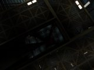

Alien Swarm 1.32 Patch and EFR Campaign! 13th February 2007
We've released a new version of Alien Swarm to fix some outstanding issues and add support for more custom maps in the voting menus. The number of custom maps for AS has increased a bunch thanks to the release of the Escape from Rhea campaign, brought to you by the same people who made the Telic campaign.
Alien Swarm v1.32 patch - (4.1 MB)
This will patch Alien Swarm v1.3 or v1.31 up to v1.32. To install this patch, extract the zip to your UT2004 folder.
Head over to the Telic site to grab the EFR Campaign: ModDB

Alien Swarm 1.31 Patch 15th May 2006
We've put up a small patch for Alien Swarm to address some exploits which were causing trouble on the public servers.
Alien Swarm v1.3 to v1.31 patch - (1.15 MB)
To install this patch, extract the zip to your UT2004 folder.
Alien Swarm 1.3 Released! 16th December 2005
Version 1.3 of Alien Swarm is now available over on our downloads page. A full changelist can be found here.
After installing the patch, be sure to grab the Telic Campaign which is also due for release today. Happy bug hunting!
1.3 and Telic Campaign Release Date! 8th December 2005
The Alien Swarm 1.3 Patch and the Telic Campaign expansion pack will be released simultaneously on the 16th of December 2005! The 1.3 patch contains updates to most of the Sigma and Ortega maps along with numerous bug fixes and balance adjustments to the game.
The Telic Campaign is an unofficial expansion pack for Alien Swarm that brings eight new, unique missions in the form of a complete campaign. In addition to the maps, Telic expands the Alien Swarm universe with new weapons, extra items, more dangerous enemies, original mission objectives and various modifications to the standard game rules.
The Telic Campaign features include:
- A unique campaign with 8 new missions.
- Varied mission environments: from abandoned bases and industrial facilities to high tech laboratories and underground caves.
- Seven new weapons that add on to the existing arsenal.
- New equipment items: from demolition explosives to sentry gun assembly kits and chemical grenades.
- Additional enemies with custom models and challenging tactics.
- New interactive objects, NPCs, mission objectives, custom triggers and more.
- Tweaked game rules to enhance the cooperative aspects of the game.
- Optional mutators allowing players and server admins to customize the gameplay.
The
basic principles of Alien Swarm are retained: vibrant non-stop action
and challenging situations that require active cooperation from the
whole team.
Here are some brand new screenshots of the Telic Campaign so you can see what's in store:
{kind=link}
{kind=link}
{kind=link}
{kind=link}
{kind=link}
{kind=link}
{kind=link}
{kind=link}
Be sure to head over to the Telic Campaign MODDB site for more information!
Telic Campaign Website launched 12th July 2005
The Telic Campaign team have launched their website covering this great looking expansion for Alien Swarm. The Telic Campaign features eight new, unique missions and expands the Alien Swarm universe with new weapons, extra items, more dangerous enemies, original mission objectives and various modifications to the standard game rules.
Head on over to their website for more information, including a complete list of features!
The Telic team have also released a teaser video, showing off gameplay footage from the campaign, so be sure to check that out on their site.
Phalanx Campaign released! 28th June 2005
MjrHuRTz has put the finishing touches on the Phalanx Campaign and has released it to the public! The Phalanx Campaign can be downloaded from these locations:
Check out the post below for screenshots and details on this great custom campaign. There's also a forum thread where you can let him know what you think of the campaign.
Phalanx Campaign preview! 29th May 2005
MjrHuRTz has been working hard constructing the Phalanx Campaign for Alien Swarm, which is our first entry into the Fan-made Maps section. We have some great screenshots and details of the campaign to show off here on the site. Check it out:
 |
{kind=link}
{kind=link}
 |
 |
 |
 |
 |  |
{kind=link}
"The Space Station Phalanx is one of the many institutes ran by the wide-spread SynTek Megacorporation. Located in the Luyten system, the station houses many facilities, including research laboratories and large information databanks.
We know very little about the research operations here, but we do know they have been experimenting largely with organic life forms, including Plants, various Earth-found animals, and even specimens from the Swarm.
72 hours ago contact with the station collapsed. SynTek have made no comment about the incident, but we have now been forced to take action.
The IAF have been called up to investigate the station, and find any data on the incident. We believe this to be a case of Swarm infestation, proceed with extreme caution."
The Phalanx Campaign gives you 6 new missions, ranging from a Greenhouse facility to heavily infested living quarters. The campaign is due for release within the next two weeks, so keep an eye here and on the forums for it!
Alien Swarm: Infested and 1.3 patch! 29th April 2005
As you can see, we've given the Alien Swarm site an overhaul to go with the announcement of our new game: "Alien Swarm: Infested" built using the Source Engine. We're putting a crazy amount of effort into this new game, so be sure to check out the released screenshots.
Our work on AS:I is long term and we won't be forgetting Alien Swarm for UT2004 in the meantime, so expect to see updates. We have the 1.3 patch underway and will shortly release a list of bugfixes and tweaks you can expect to see in it.
We'll also be highlighting the best quality fan-made maps in a new section on the site, with special features on two promising custom campaigns currently in production. We'll also be offering support to these projects to better integrate them into Alien Swarm and allow them to add all the custom features they need.